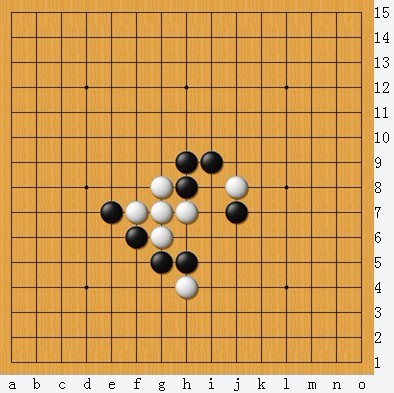
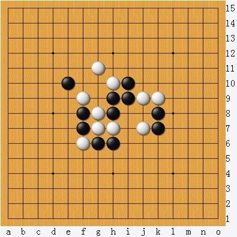
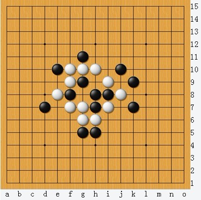

白棋先行 如何取胜 【初级】
#1 白棋先行 如何取胜 【初级】作者：华夏小宝 发表时间：2012-11-3 14:18:47
［此帖子已被 华夏小宝 在 2012-11-3 14:22:41 编辑过］
#2 Re:白棋先行 如何取胜 【初级】作者：屏蔽 发表时间：2012-11-4 10:28:46
目测第三题一批人做不出来。#3 Re:白棋先行 如何取胜 【初级】作者：釣鱼岛岛主 发表时间：2012-11-4 12:31:25
楼上你再鄙视我们贴吧群的人吗？ 你要引起公愤？ 走夜路要小心了你。阿弥陀佛…………#4 Re:白棋先行 如何取胜 【初级】作者：与郎共五 发表时间：2012-11-5 9:11:54
第三题看不到。前两题简单抓。楼上可能也没看到。#5 Re:白棋先行 如何取胜 【初级】作者：小小亦默 发表时间：2012-11-7 17:51:45
目测第三题两个跳四再下面活三解掉黑的VCF再双跳4强抓
#6 Re:白棋先行 如何取胜 【初级】作者：雨过云舒 发表时间：2012-11-7 19:01:42
这看上去像是东方连珠论坛上的图 。
。#7 Re:白棋先行 如何取胜 【初级】作者：雨过云舒 发表时间：2012-11-7 19:12:59
第三题f6活三上下连贯谁与争锋。